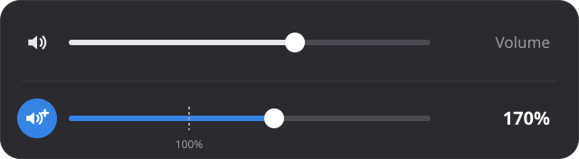
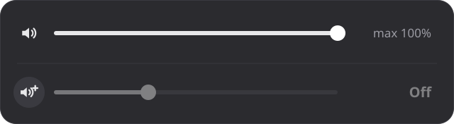

Make your speakers louder
A tiny GNOME extension that boosts your volume up to 300%, right from the Quick Settings menu.

Features
Install
Needs GNOME Shell 48, 49 or 50, for example Ubuntu 25.04 or newer.
- Download
gnome-shell-extension-louder_<version>_all.debfrom the latest release. - Double-click it and press Install in App Center.
- Log out and log back in.
- Open the Extensions app and turn on Louder.
- Download
louder@saikat.shell-extension.zipfrom the latest release. - Install it:
gnome-extensions install louder@saikat.shell-extension.zip - Log out and log back in.
- Turn it on in the Extensions app, or run:
gnome-extensions enable louder@saikat
git clone https://github.com/saikatnjm/louder.git
cd louder
make installLog out and back in, then turn on Louder in the Extensions app.
How to use
- Click the top-right corner of the screen to open Quick Settings.
- Drag the Louder slider, below the regular volume slider, anywhere from 0% to 300%.
- Click its speaker icon to turn the boost on or off. Louder remembers your choice.

Help
The Louder slider doesn't appear
Log out and back in after installing, and make sure Louder is turned on in the Extensions app. Then check its state:
gnome-extensions info louder@saikatIf it says State: ERROR, this shows why:
journalctl --user -b -g louder --no-pager | tail -20Please include that output when you report a problem.
The regular slider still goes above 100% with boost off
Another extension, often another volume booster, may be switching GNOME's "Over-Amplification" setting back on. Turn that extension off, then switch Louder's boost off and on once.
Sound crackles at high volume
The sound is louder than your speaker can play cleanly. This happens with every volume booster. Lower the volume until it stops.
How do I uninstall it?
If you installed the .deb:
sudo apt remove gnome-shell-extension-louderOtherwise, remove it in the Extensions app. Louder puts GNOME's Over-Amplification setting back the way it was.
Can I change the 300% limit?
Yes. Edit MAX_BOOST near the top of extension.js (3.0 means 300%), reinstall with make install, and log out and back in.